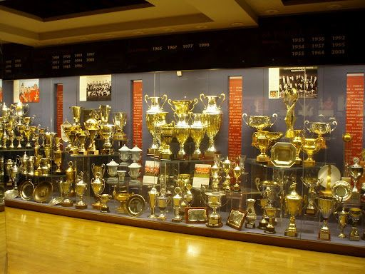

Home
Contact
Trophy Cabinet
This page shows the amount of silverware since 1878

First Division / Premier League 20
1907–08, 1910–11, 1951–52, 1955–56, 1956–57, 1964–65, 1966–67, 1992–93, 1993–94, 1995–96, 1996–97, 1998–99, 1999–2000, 2000–01, 2002–03, 2006–07, 2007–08, 2008–09, 2010–11, 2012–13
Second Division:2
1935–36, 1974–75
FA Cup:12
1908–09, 1947–48, 1962–63, 1976–77, 1982–83, 1984–85, 1989–90, 1993–94, 1995–96, 1998–99, 2003–04, 2015–16
League Cup:5
1991–92, 2005–06, 2008–09, 2009–10, 2016–17
FA Charity/Community Shield:21
1908, 1911, 1952, 1956, 1957, 1965*, 1967*, 1977*, 1983, 1990*, 1993, 1994, 1996, 1997, 2003, 2007, 2008, 2010, 2011, 2013, 2016
European Cup / UEFA Champions League: 3
1967–68, 1998–99, 2007–08
European Cup Winners' Cup: 1
1990–91
UEFA Europa League: 1
2016–17
1991
Intercontinental Cup: 1
1999
FIFA Club World Cup: 1
2008